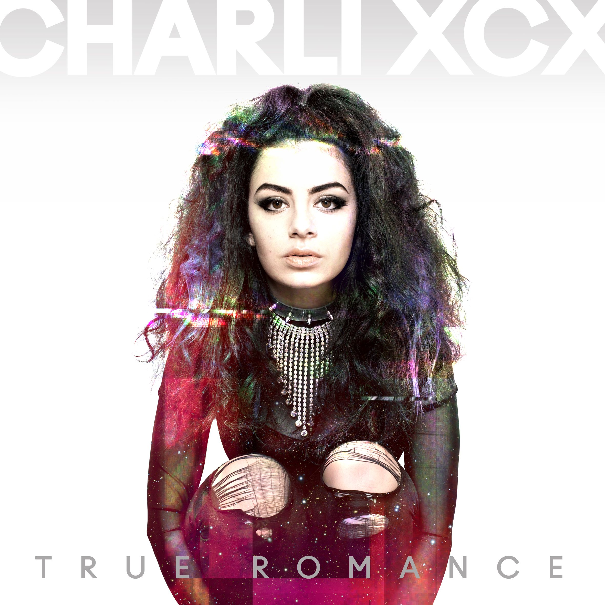

True Romance - Charli XCX
Created: 2021-07-10 | Modified: 2021-07-18

Charli XCX. True Romance. 2013. Named after the Quentin Tarantino movie by the same name.
A fucking fantastic synth pop/post-trance album. So far the most unbeatable of her discography.
Powerful synth music with obvious pop elements. This is really viewable in the lyrics. Y'know, it's that romantic stuff. I don't completely dislike it, though. Usually I depise all mention of the cringe worthy "don't leave me" kind of thing, but she does it in a different way, focusing on other aspects of a romantic relationship. It isn't mind blowing, but it's a good switch up.
Really strong intro, flowing one into another for the first three tracks, of which are the album best. Everytime I come back, I start with the first three tracks (Nuclear Seasons, You, Take My Hand), sometimes skipping the fourth (Stay Away) depending how I'm feeling, and going right to the 7th (So Far Away), where I stop and do something else. I think this album suffers from the typical album creation burnout type of thing. It starts strong, but fizzles out in the end. It's a shame, but happens all too often during the creation of musical projects.
The end is so bad. It sounds like they didn't even bother mixing Lock You Up, the final track, which is alright disregarding so. It suffers from shitty main riffage, with a mildly intriguing chorus, and good vocal performance.
Favorite song: You (Ha Ha Ha)
See also:
 2020, 2021 (C) Brody Rethy. All rights reserved.
2020, 2021 (C) Brody Rethy. All rights reserved.